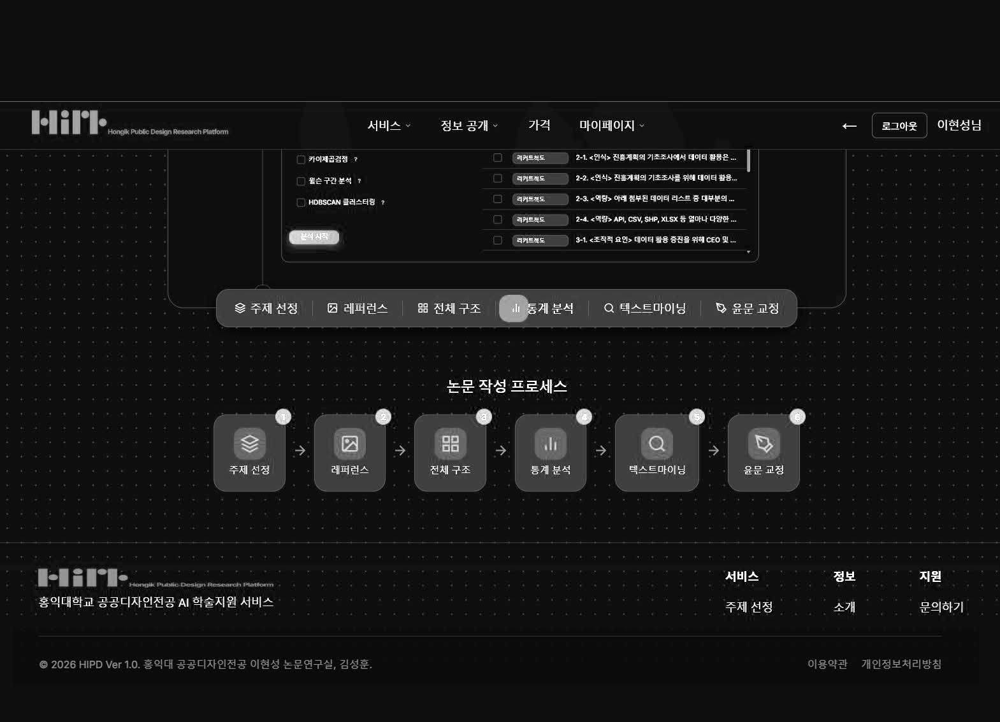
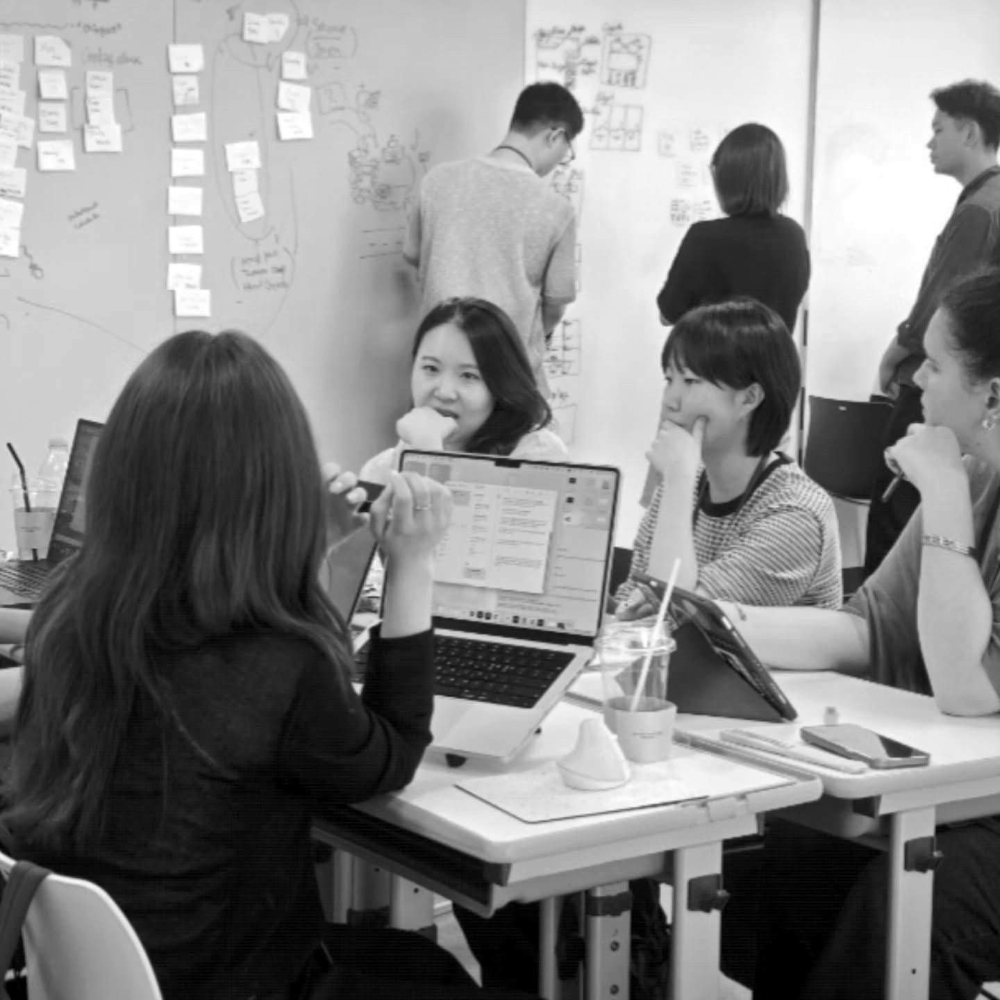

SPD Lab — AI Research Platform · Beta 2026.03.14
HIPD
Hongik Intelligent Public Design
HIPD는 홍익대학교 공공디자인전공 이현성 논문연구실이 자체 개발한 AI 기반 논문연구 지원 SaaS 플랫폼입니다. 연구실에 축적된 130여 편의 우수 학술논문을 학습 기반으로 내재화하여, 석·박사 구성원의 논문 역량 향상을 돕습니다.
복수의 대규모 언어모델을 API로 연동해 운영합니다.
본 플랫폼의 목적은 논문을 편히 쓰는 데 있지 않습니다. 기능적이고 형식적인 부분의 수고를 덜어, 연구자만이 할 수 있는 수준 높은 가설 수립과 독창적인 연구 결과의 해석에 더 집중하게 하는 것입니다.— LEE Hyunsung, AI Architect
AI를 활용할수록 연구자의 판단은 더욱 중요해집니다. 연구의 중심에 그 판단이 머물도록 HIPD를 설계하였습니다.— KIM Sunghun, AI Builder
Functions
논문의 전 과정을 잇는
5대 기능
연구 주제를 세우는 첫 단계부터 제출 직전의 윤문까지, 논문연구의 흐름을 따라 설계되었습니다.
Research Topic연구 주제 선정
독립변수와 종속변수를 입력하면 10개 이상의 논문 제목 후보와 연구 가설을 생성합니다. 석·박사 수준에 맞춘 제안으로 연구 초기 단계에 수준 높은 가설 설정의 자원을 제공합니다.논문 기획 초기 · 프로포절
Reference레퍼런스 관리
키워드를 입력하면 논문 데이터베이스에서 관련 논문을 추출하고, 해당 내용의 페이지 위치까지 안내합니다. 문헌 탐색 과정의 효율을 높입니다.이론적 배경 작성
Structure논문 구조 설계
서론–이론적 배경–연구 방법–연구 분석–결론의 표준 5장 구조를 기준으로 각 장의 분량 배분을 설계합니다. KCI 수준의 5장 구조 초안 완성을 목표로 합니다.목차 확정 이후
Analysis7가지 통계·분석 지원
선행연구 PDF를 업로드하면 텍스트마이닝을, 설문 엑셀 파일을 업로드하면 기초 통계 분석을 수행하고 결과를 그래프와 표로 시각화합니다. N-gramTF-IDF클러스터링네트워크 분석신뢰도 분석T검정교차분석 선행연구 분석 · 4장 분석
Proofreading윤문 교정
띄어쓰기와 표현 교정, 인용과 본문의 구분, 문단 단위 수정안 제시로 학술적 글쓰기의 형식적 완성도를 높입니다.최종 제출 전

Support System
논문 3중 지원 체계
HIPD는 사람의 지도를 대신하지 않습니다. Group 제도와 튜터 제도의 인적 지도 위에, 기술적 지원의 축으로 함께 작동합니다.
Group 제도
주제가 유사한 구성원 간 그루핑 면담과 피어 크리틱으로 협동적 연구 환경을 조성합니다.
튜터 제도
박사 졸업생 튜터 4인이 경험을 바탕으로 1:N 지도를 맡고, 재학생의 HIPD 활용을 함께 지도합니다.
HIPD
연구의 기획·분석·교정 전 과정에 걸쳐 AI 기반의 자동화 지원을 제공합니다.

Roadmap
도입 로드맵
2026년 3월 14일 베타 버전을 공개했습니다. 구성원의 피드백을 반영하며 단계적으로 고도화합니다.
안정화
베타 런칭, 사용 가이드 완성, 1차 실습 세션 개최
확산
전 구성원 1회 이상 활용, 활용 사례 수집
고도화
피드백 반영 업그레이드, 기능 추가, 엔진 업그레이드
외부 연계
연구 공동체 외부로의 확장과 협력 연계
Credits
HIPD는 SPD Lab
구성원 전용 플랫폼입니다.
계정 발급과 이용 문의는 연구실 운영위원회로 연락해 주세요.